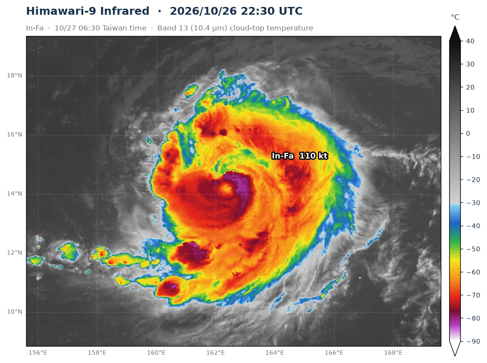
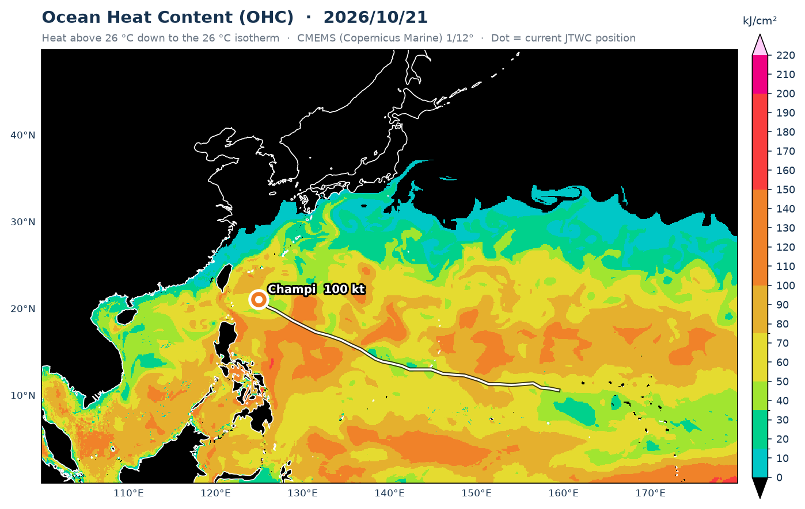
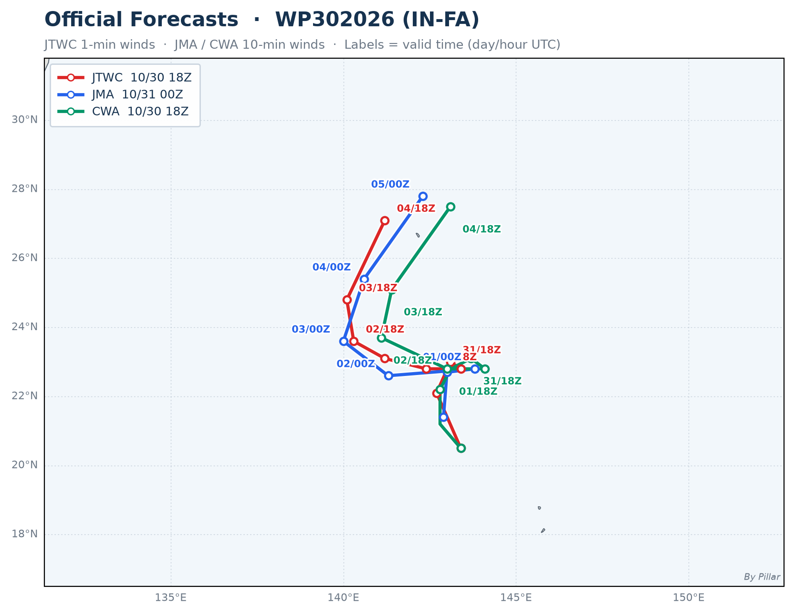

IN-FA
Cat3 Cat3 ·110 kt ·14.1°N, 162.6°E
1 active system(s) · ensemble guidance from 9 models, refreshed every 10 minutes.
IN-FA
Moving west-northwest at about 7 km/h.向西北西移動，時速約 7 公里。
Strengthening to 115 kt (Cat4) in 24 h.24 小時後增強至 115 kt（Cat4）。
Taiwan landfall: under 1% in every model.登陸臺灣：各模式機率都低於 1%。

How to read this
Himawari-9 infrared (band 13, 10.4 µm) for the last 3 hours, one frame every 10 minutes, centered on the storm; it opens on the latest frame · Colors show cloud-top temperature: the colder the top, the taller the cloud and the stronger the convection; a warm dot ringed by the coldest colors is the eye and eyewall · Centred on the latest JTWC position (warnings come every 6 h, so the storm may have moved a little since); the track and JTWC forecast are on the ocean heat content map below · Raw data from the NOAA/JMA copy on AWS, observation time in the title of each frame

🔍 Click to enlargeHow to read this
Tropical cyclone heat potential: heat stored above 26 °C between the sea surface and the 26 °C isotherm (kJ/cm²), computed from the latest daily CMEMS (Copernicus Marine) 1/12° ocean analysis, or HYCOM (US Navy) as a backup · A thick warm layer keeps the water under a typhoon warm even when it stirs the ocean, which favors strengthening; about 50 kJ/cm² (yellow and warmer) is a common threshold · Black = water colder than 26 °C or land · Dot = current JTWC position, solid line = track so far, dashed = JTWC forecast (dots every 24 h)

🔍 Click to enlarge| Hour | JTWC10/26 18:00 | JMA10/26 18:00 | CWA10/26 18:00 |
|---|---|---|---|
| Now | 14.1°N 162.6°E110 kt | 14.2°N 162.7°E85 kt | 14.2°N 162.7°E78 kt |
| +12 h | 14.3°N 161.9°E105 kt | — | 14.3°N 161.9°E87 kt |
| +24 h | 14.5°N 160.8°E115 kt | 14.5°N 160.7°E95 kt | 14.4°N 160.7°E99 kt |
| +48 h | 15.1°N 156.3°E125 kt | 15.2°N 156.3°E95 kt | 14.8°N 156.1°E107 kt |
| +72 h | 16.3°N 149.6°E135 kt | 16.4°N 149.3°E95 kt | 15.9°N 149.4°E107 kt |
| +96 h | 19.2°N 143.4°E130 kt | 19.3°N 143.0°E95 kt | 19.0°N 142.9°E107 kt |
| +120 h | 21.4°N 140.8°E120 kt | 21.2°N 140.6°E95 kt | 21.4°N 140.7°E103 kt |
How to read this
JTWC (US), JMA (Japan) and CWA (Taiwan) official tracks · JTWC reports 1-minute winds, JMA and CWA 10-minute winds, so JTWC numbers run higher for the same storm · Time under each agency = forecast base time (UTC) · Map labels = valid time, day/hour UTC (e.g. 23/12Z = 23rd 12:00 UTC = 20:00 Taiwan time)
| Model | WN3-C10/26 12Z · ≤360 h | WN2-C r210/26 12Z · ≤294 h | WN2-C r110/26 12Z · ≤360 h | WN2-C 100010/26 12Z · ≤354 h | GENC10/26 12Z · ≤336 h | AIFS-ENS10/26 12Z · ≤360 h | AIFS-single10/26 12Z · ≤252 h | ECMWF-ENS10/26 12Z · ≤360 h | ECMWF HRES10/26 12Z · ≤348 h | AIGEFS10/26 18Z · ≤240 h | AIGFS10/26 18Z · ≤240 h | GEFS10/26 12Z · ≤192 h | GFS10/26 18Z · ≤240 h |
|---|---|---|---|---|---|---|---|---|---|---|---|---|---|
| Taiwan landfallstorm centre moves onto Taiwan's main island (outlying islands excluded) | |||||||||||||
| tw_landfall | <1% | <1% | <1% | <1% | <1% | <1% | — | <1% | — | <1% | — | <1% | — |
| City striketrack passes within 1° (~111 km) of the city | |||||||||||||
| naha | <1% | <1% | <1% | <1% | <1% | 4%11/06 02Z | — | <1% | — | <1% | — | <1% | — |
| manila | <1% | <1% | <1% | <1% | <1% | <1% | — | 2%11/09 20Z | — | <1% | — | <1% | — |
| seoul | 2%11/06 00Z | <1% | <1% | <1% | <1% | <1% | — | <1% | — | <1% | — | <1% | — |
| tokyo | <1% | <1% | <1% | <1% | <1% | 2%11/06 22Z | — | <1% | — | <1% | — | <1% | — |
| taipei, taichung, kaohsiung, hualien, hengchun: under 1% in every modeltaipei、taichung、kaohsiung、hualien、hengchun：各模式都低於 1% | |||||||||||||
How to read this
Share of members whose track passes within 1° (~111 km) of the city · Time below = median first arrival among those members (UTC) · Taiwan cities always shown; others only when any model reaches 1%
Western Pacific Tropical Cyclone Genesis Potential — Ensemble Overview
Circles = ensemble members at each 6-hr step, colored by minimum sea level pressure. Gray lines = individual ensemble tracks (up to 360 h; GEFS 120 h). Data sourced from Google DeepMind WN3-C.
Storm Archive
Every storm this site has followed: the real JTWC track, how each model's forecasts changed run by run, and how far off they turned out to be.
Thick colored line = the real JTWC track, colored by intensity · Orange = the selected run's ensemble-mean (or deterministic) forecast, with a dot every 24 h · Thin lines = all other runs of the same model, light = older, dark = newer · Drag the slider to step through the runs
How to read this site
This site gathers AI and physics-based ensemble forecasts for Western Pacific tropical cyclones and redraws them in one common style every 10 minutes, next to the official forecasts from JTWC, JMA (Japan) and CWA (Taiwan). Each storm page has five tabs: Summary (a 3-hour Himawari-9 infrared satellite loop, the official forecasts side by side, Taiwan landfall and city strike probabilities, and the ocean heat content under the storm), Track (model comparison, ensemble maps, animation, an interactive map, track trend, the JTWC forecast and the 500 hPa steering flow), Strike (strike probabilities by area, by period and for 34-kt winds), Intensity (intensity forecast) and Scores (track, along-/cross-track and intensity errors). One model menu at the top switches every chart to the same model. The Archive keeps every storm after it is gone, with its real track and how the forecasts did.
Satellite Loop (last 3 hours)
Multi-Model Comparison
Track Evolution Animation
Ensemble Track Forecast
Official Forecasts Compared
Interactive Track Map
Strike Probability
Strike Probability by Period
Taiwan Landfall & City Strike Probability
Track Trend
Intensity Forecast
Ocean Heat Content
Steering Flow (500 hPa)
Track Error by Model
Storm Archive
Genesis
iPhone: open the site in Safari, tap Share → Add to Home Screen. Android: open it in Chrome, tap ⋮ → Add to home screen. It opens full screen like an app and always shows the latest forecast. Links shared on LINE or Facebook show a preview card with the latest map, storm name, intensity and update time.
Not for operational use. For official warnings, follow your national meteorological agency.
Probabilities on this site are the share of ensemble members that forecast an outcome — a measure of how much the models agree, not an official forecast probability. A deterministic run (AIFS-single, ECMWF HRES, AIGFS, GFS) is a single possible scenario.